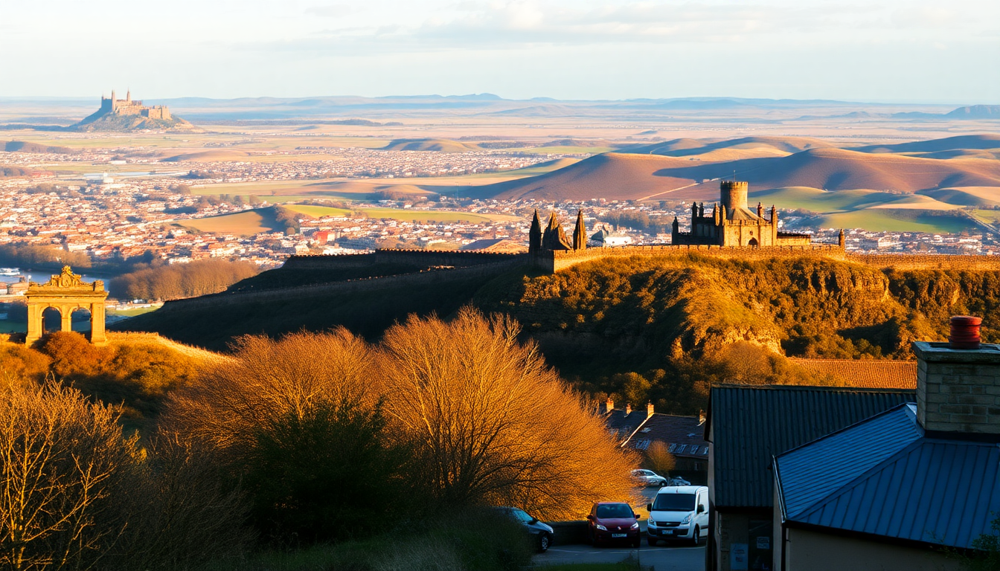

10-Day UK Trip: London, Edinburgh & Scottish Highlands

We landed at Heathrow on a grey Tuesday and immediately learned that the best way to beat jet lag is to walk until your legs ache. Over ten days we threaded London, Edinburgh, and the Scottish Highlands together by train and rental car, and I’ll share exactly what worked—and what we’d skip next time.
How should we split our time between London, Edinburgh, and the Highlands?
We did 3 nights in London, 3 in Edinburgh, then 2 nights in Inverness and 1 in Fort William. That gave us enough time in each city without feeling rushed, and the Highlands leg was tight but doable. If you have an extra day, add it to Inverness to explore Glen Affric or take a boat on Loch Ness.
- London (Days 1–3): Focus on one or two neighborhoods per day. We based ourselves near Covent Garden at The Fielding Hotel—small rooms, but a five-minute walk to the Royal Opera House and a dozen pubs.
- Edinburgh (Days 4–6): Stay in the Old Town or New Town. We liked The Glasshouse near the Edinburgh Playhouse for its rooftop bar view of the castle.
- Highlands (Days 7–10): Base in Inverness for Loch Ness and Culloden, then drive west to Fort William for Glen Coe and Ben Nevis.
What’s the best way to get from London to Edinburgh?
Take the LNER train from London King’s Cross to Edinburgh Waverley. It’s about 4.5 hours, and you arrive right in the city center. Book ahead on the LNER app to get the cheapest advance fares—we paid £45 each for a 7:40 AM departure. The café car serves decent bacon rolls, but bring your own coffee.
- Flying is faster but not worth it once you factor in airport transfers and security. The train lets you see the Northumberland coast.
- Overnight bus? Skip it. The Caledonian Sleeper is romantic in theory but cramped in reality unless you book a cabin.
- Driving? Only if you plan to stop at York or Durham Cathedral along the way. Otherwise, the A1 is boring.
Which neighborhoods and attractions in London are worth our time?
South Bank was our favorite walk: from the Tate Modern past the Shakespeare’s Globe to Borough Market. The market gets packed by 11 AM, so go early for a sausage roll from Richard’s and a flat white from Monmouth Coffee. The British Museum is free but choose one gallery—the Egyptian rooms are the best. Avoid the queue for the London Eye; the view from Sky Garden is free and less crowded.
- Covent Garden for street performers and Dishoom for breakfast naan rolls. The queues look long but move fast.
- Camden Market is overhyped. Skip the tourist stalls and eat at The Cheese Bar on Parkway instead.
- Westminster is a one-time walk-through. See Big Ben from the bridge, then leave. The Churchill War Rooms are worth the ticket price.
What should we do in Edinburgh beyond the castle?
The Royal Mile is a gauntlet of souvenir shops, but the side alleys—called closes—are where the city lives. Walk Mary King’s Close for a guided tour of underground 17th-century streets. Arthur’s Seat is a proper hike (45 minutes to the top) with views over the Firth of Forth. Go at sunrise to avoid crowds.
- The Scotch Whisky Experience is a tourist trap. Instead, book a tasting at The Bow Bar on Victoria Street—no nonsense, 300 whiskies.
- Greyfriars Kirkyard is free and eerie. Find the grave of Greyfriars Bobby outside.
- Dinner at The Kitchin is expensive but worth it for the seasonal Scottish menu. We shared the roast grouse and a sticky toffee pudding.
- Portobello Beach is a 20-minute bus ride from the center. Good for a quiet afternoon if the weather holds.
How do we handle driving the Scottish Highlands?
We picked up a rental car from Enterprise in Edinburgh (book weeks ahead—Highland car hire sells out in summer). The drive from Edinburgh to Inverness via the A9 takes about 3.5 hours. Stop at Blair Castle in Pitlochry for a short walk and coffee. The A82 from Inverness to Fort William is the highlight: single-track roads, sheep on the tarmac, and Glen Coe opening up like a grey-green jaw.
- Fill up in Inverness before heading west. Petrol stations are sparse past Fort Augustus.
- Download offline maps on Google Maps. Phone signal drops completely in Glen Coe.
- Drive slow on the A82. Tourists stop suddenly to photograph the Three Sisters mountain formation. Use the passing places.
- Loch Ness is prettier from the Fort Augustus side than from Urquhart Castle. The castle ruins are okay, but the car park is a mess.
What are the best day trips from Inverness and Fort William?
From Inverness, drive 15 minutes to Culloden Battlefield. The visitor centre is excellent—honest about the 1746 massacre, no romantic gloss. Then head to Clava Cairns (free, 5 minutes from Culloden) for Bronze Age burial chambers that inspired Outlander fans. From Fort William, take the Jacobite Steam Train to Mallaig—the “Harry Potter train” route over the Glenfinnan Viaduct. Book tickets three months ahead; they sell out fast.
- Glen Nevis is a short drive from Fort William. Hike the Steall Falls trail (2 hours, moderate) for a waterfall and wire bridge.
- Eilean Donan Castle is a 45-minute drive from Fort William. Photogenic but small inside. The café does good scones.
- Isle of Skye is doable as a long day trip from Fort William, but we found it overrun with tour buses. Stick to Glen Coe for quieter scenery.
FAQ
Is 10 days enough for London, Edinburgh, and the Highlands? Yes, but you have to move fast. Three cities in ten days means you’ll spend one day traveling between them. If you want to hike or relax, drop one city. London is the easiest to cut if you’ve visited before.
Do we need a car in the Highlands? Yes, for flexibility. Public buses run between Inverness and Fort William but are infrequent—one every two hours. A car lets you stop at random viewpoints and small villages like Spean Bridge. Just be comfortable with narrow roads.
What’s the best time of year for this itinerary? May or September. June through August is peak tourist season—Edinburgh’s Royal Mile is shoulder-to-shoulder, and Highland hotels double their prices. We went in early October and had crisp weather and shorter queues.
Conclusion
- London: 3 nights, base in Covent Garden, skip the London Eye, eat at Borough Market early.
- Edinburgh: 3 nights, walk Arthur’s Seat at sunrise, avoid the Scotch Whisky Experience.
- Highlands: 4 days with a rental car, drive the A82 through Glen Coe, book the Jacobite train early.
- Travel: LNER train London to Edinburgh, then pick up a car. Download offline maps and fill the tank in Inverness.